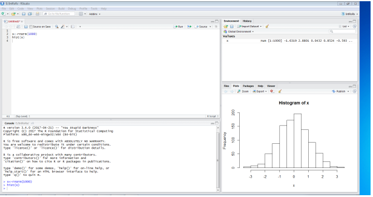
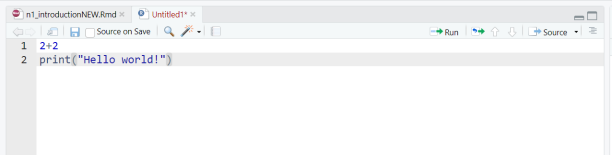
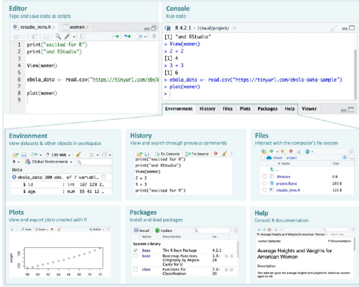
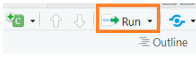

Chapter 2 Getting Started with R
2.1 RStudio interface
RStudio opens with four panes by default. If you only see three, create a new script to reveal the Source pane: File -> New File -> R Script (shortcut: Control+Shift + N on Windows/Linux, Command+Shift + N on Mac).

The diagram below summarises the different parts of RStudio.

Basic layout
Four panels and various tabs
Top-left - where you type source code, like the script editor in Stata.
Bottom-left - is the Console, where you see what R is doing.
Upper-right - where you see your list of R objects and things in your Workspace (explained in the sections to follow). There is also a history tab where you find the history of all your commands in that session. Recent versions of RStudio have another tab, Tutorial, for integrated tutorials powered by the
learnrpackage.Bottom-right is where you can see your file structure, graphical output, available packages, and help documents.
We now consider these one by one.
2.1.1 Source/ Editor

You’ll do most of your coding here, so it’s helpful to give this pane more space in your layout. Type code in the editor, then run a line or selection with Ctrl+Enter (Windows/Linux) or Cmd+Enter (Mac); results show in the Console.
2.1.2 Example: Running a line of code in the Editor
Example: Running a line of code
Let’s begin by learning how to write and run code from the Source pane.
Open a new script:
Go to File -> New File -> R Script.
A new blank tab appears in the Source pane.
Type this line:
- Run the line:
- On Windows - press Control + Enter
- On macOS - press Command + Enter
RStudio sends the line to the Console (lower-left pane), runs it, and shows:
## [1] "Hello world!"Guided Practice — Running Multiple Lines of Code
Now you’ll extend that first example step by step.
- Add another line so your script looks like this:
Highlight both lines with your mouse or keyboard.
Run them together: Ctrl + Enter (Windows) or Cmd + Enter (Mac)
Both lines should now appear in the console output
Independent Practice
Your turn!
- Add a new line that prints your own message:
Run just that line and check the result.
Select all your code (Cmd/Ctrl + A) and run the entire script (Cmd/Ctrl + Enter).
You should see three printed messages in the Console, one after another.
Tip: There is also a Run button at the top-right of the Source pane

It runs the current line or any highlighted lines. You can use it, but prefer the keyboard shortcut for speed: Cmd/Ctrl + Enter.
Saving your script To save the script, press
Ctrl/Cmd + S
Give the file a name such as r_introduction.R or your preferred name. Save it somewhere easy to find, like the Desktop. (Later, you’ll learn better ways to organize your scripts inside “projects”.)
2.1.3 Console
The Console (bottom-left pane in RStudio) is where R actually runs your code. When you send commands from the Source (Editor) pane or type directly into the Console, R executes them immediately and prints the output below the typed command. Think of it as your conversation window with R - you type a command, R responds.
Example: Running Code in the Console
Let’s see how the Console works.
Click inside the Console pane.
Type a simple calculation:
Press Enter
You should see:
## [1] 8The code was run instantly. Everything typed directly in the Console is not saved, so use it mainly for quick checks.
Guided Practice - Trying Different Commands
Now try a few more examples:
- Type:
Then press Enter
- Next, type:
Then press Enter
You will see 5 and 4 as the results of each command
- Type
and run it.
Each time you press Enter, R immediately performs the calculation and prints the output.
Tip: You can recall your last command by pressing the Up Arrow on the keyboard. Once you have recalled it, you can edit if needed and press Enter to run again.
Independent Practice
Now it’s your turn to explore.
- Type a few calculations of your own, such as:
- 12 - 5
- 4 ^ 2
- log(100)
Run each line by pressing Enter after typing.
Notice how R prints the result directly below each command.
When you type directly in the Console, R executes commands immediately but does not store them. For any code you want to save and reuse, make sure to write it in a script (in the Source pane) and run it from there.
2.1.4 Environment Tab
The Environment tab, usually, the top-right pane, shows all the objects currently stored in R’s working memory, your workspace. Every time you create a new object (like a dataset, variable, or function), it appears in this list.
You can think of the Environment as R’s memory view, it keeps track of everything you have created during your session.
Example: Watching the Environment Update
Let us see what happens in the Environment tab when you create something R wants to remember.
- In your script (Source pane), type:
- Run the line (Cmd/Ctrl + Enter).
Look at the Environment tab (top-right). You should now see an entry labelled x with a value of 8.
Whenever R stores something, even a simple calculation like this, it keeps track of it in the Environment. Later, we will learn what these stored things (called objects) are and how to manage them.
Guided Practice - Exploring What the Environment Shows
Try a few more examples:
- Add these lines to your script and run them one by one:
Watch how new entries appear in the Environment tab each time you run a line.
Click the small blue triangle next to any name to see a quick summary of what it contains.
The Environment pane updates in real time as you work. It’s a visual way of seeing what R is keeping track of.
Independent Practice
Now try this small challenge:
- Create and run one or two short calculations of your own, such as:
Check that each new name appears in the Environment with its value beside it.
Use the broom icon at the top of the Environment pane to clear everything.
Run one line again - see how the Environment repopulates with just that result.
Clearing the Environment does not affect your code. It only removes what R has stored in memory for now
2.1.5 History Tab
The History tab (next to the Environment tab, top-right pane) keeps a running list of all the commands you have run during your R session - whether they were typed directly into the Console or sent from a script.
Think of it as RStudio’s built-in “memory log” - a quick way to review what you have done or re-use code you ran earlier.
Example: Viewing Your Command History
Let us see what appears in the History tab.
- In your script or Console, run a few simple commands:
- Now look at the History tab (top-right, next to Environment). You’ll see each of these commands listed in order.
Each time you run a line of code, RStudio automatically records it in the History tab. This makes it easy to revisit or reuse commands without retyping them.
Guided Practice: Sending Commands from History
You can reuse past commands directly from the History tab.
Click on one of your earlier commands in the History list (for example, 5 + 3).
At the top of the History tab, click “To Console”, the command will appear in the Console, ready to run.
Try “To Source” — this sends the same command to your script instead, where you can save it or edit it.
Tip: The commands recorded in the History tab help you to recover something youran earlier but did not save in a script - no need to retype!
Independent Practice
Now try this on your own:
- Type and run a few new lines of code, such as:
Open the History tab.
Use the Shift-click method to select several lines at once (click the first line, hold Shift, then click the last).
Send them all back to the Console or Source using the buttons at the top of the tab.
Experiment with the Search bar (top-right of the History pane) — try typing part of a command like print or 7 to find related lines quickly.
2.1.6 Files Tab
The Files tab (bottom-right pane in RStudio) shows the files and folders in the folder where RStudio is currently working — this is called your “working directory” Think of it as a small file explorer built right into RStudio - we will revisit this including how it is set up. From here, you can create, open, rename, and delete files and folders without leaving RStudio.
Example: Exploring the Files Tab
Let us take a quick look at what the Files tab can do.
Open RStudio and locate the Files tab in the bottom-right pane.
Look at the list — these are the files and folders in your current workspace.
Click the New Folder button at the top of the tab.
Give your folder a name such as test_folder and click OK.
The folder appears in the list.
The Files tab lets you interact with your computer’s folders and files directly inside RStudio, keeping everything related to your R work in one place.
Guided Practice - Managing Files and Folders
Now, try a few more options in the toolbar.
1.Click on the new folder to open it.
Inside, choose New File -> R Script, name it practice_script.R, and click OK.
Use the Rename button to rename it to first_script.R.
Finally, try the Delete button to remove either the script or the folder (RStudio will ask for confirmation).
Independent Practice Take a few minutes to explore on your own:
Create another new folder and name it anything you like.
Use the Up Directory (↑) button to move back to the parent folder.
Try the Refresh button to update the view if something changes.
Explore the More… menu to see extra options (for example, “Show Folder in New Window”).
2.1.7 Plots Tab
The Plots tab (bottom-right pane in RStudio, next to the Files tab) is where any figures or graphs you create in R will appear. Whenever you run a plotting command, RStudio automatically displays the resulting figure here.
Example: Creating Your First Plot
Let us make a simple plot to see how this tab works.
- In your script, type:
- Run the line (Cmd/Ctrl + Enter).
You should see a scatterplot appear in the Plots tab.
The dataset women is built into R. It contains average heights and weights of American women aged 30 – 39. We are not analysing it yet, we are just using it to see where plots show up in RStudio.
Guided Practice — Exploring the Plot Tools
Now, take a moment to look at the toolbar at the top of the Plots tab:
Use the ← / → arrows to move between plots if you create more than one.
Click Zoom to open the plot in a larger window.
Click Export → Save as Image or Save as PDF to save a copy of the plot to your computer.
Click the broom (🧹) icon to clear all plots from the tab.
Independent practice
Try making a few variations:
Each time you run a line, a new plot appears in the Plots tab. Use the navigation arrows to move between them and experiment with the Zoom and Export buttons.
2.1.8 Packages Tab
The Packages tab (bottom-right pane, next to Plots and Help) shows all the packages currently installed on your computer.
Packages are collections of R code that add new tools or features to R — such as new plotting styles, data import functions, or analysis methods. You will learn how to install and use them later in the course.
Example: Exploring the Packages Tab
Let us look at what is inside the Packages tab.
Click on the Packages tab (bottom-right pane).
Scroll through the list — each item (in blue) is the name of an installed package.
Packages with a checkmark (✔) are loaded, these are the ones currently active and ready to use.
R always loads a few essential packages automatically when it starts (for example, “stats” and “graphics”). The rest are available but inactive until you load them.
Guided Practice — Finding and Installing Packages
Let us explore the buttons at the top of the tab.
Click the Install button — you’ll see a small window that asks for a package name.
You don’t need to install anything now; just notice how it works.
The Update button checks if newer versions of your installed packages are available.
The Loaded Only checkbox filters the view so you see only packages currently in use.
Tip: Although you can install packages from this tab, we’ll learn a more efficient and reproducible way - by using R code (install.packages() and library()) - in a later lesson.
Independent practice
Take a few minutes to explore:
Scroll through the list and see which packages have checkmarks.
Use the Search bar (top-right of the tab) to find a package called graphics - this is one of R’s built-in packages that handles plotting.
Click the Help button at the top to open documentation for a selected package.
Try this: Run a quick plot again to confirm that packages like graphics are already working for you:
The plot() function comes from the graphics package, which R loads automatically when it starts.
2.1.9 Help Tab
The Help tab (bottom-right pane) shows documentation for R functions, datasets, and packages. Help pages can feel dense at first, but they become invaluable as you learn the layout.
Typical sections you’ll see:
Description - what it does
Usage - how to call it
Arguments - what each input means
Value - what it returns
Examples - try-it code at the bottom
Example: Opening Help
Try these, one at a time (run each line):
?plot # help for the plot() function
?women # help for the built-in dataset 'women'
help("print") # another way to open helpTip: In RStudio, place your cursor on a function name (e.g., plot) and press F1 to open its Help page.
Guided Practice — Searching Help
Explore a few ways to find help:
In the Help tab’s search box (top), type plot and hit Enter.
In the Console, try a topic search (broader than ?):
- Scroll to the Examples section of a help page and click Run examples (or copy an example into your script and run it).
Independent Practice
Try these quick tasks:
- Open help for View:
Skim the Arguments section to see what View() accepts.
Open help for the women dataset again:
- Find the short description of what the dataset contains.
- Use F1 on the word plot in your script to open its help directly.
2.2 Organize your R session
Commands
Now that you’ve explored the RStudio interface and know how to run code, let us look at the structure of R commands.
R follows a simple pattern when you ask it to do something:
> command(argument1, argument2, ...,)
For example:
Each command name is followed by parentheses () that contain the information (called arguments) R needs to perform the task. Even if no information is required, the parentheses are still needed to tell R to do something.
Guided practice
Let’s try a few examples together:
Each line is a different command that tells R to perform a task — adding, summing, or finding a square root.
2.2.1 Working Directory: Where R Looks for Your Files
Your working directory is the folder where R looks for files to read and where it saves anything you create. Think of it as R’s current workspace on your computer.
You can check it in RStudio Console:
getwd() - This command shows the folder R is currently using.
2.2.1.1 Set working directory
One can set or change the working directory in RStudio (Session) using the following command:
setwd("path_to_directory") - Set another working directory
However, managing your working directories this way is not efficient.
- Problem: If you rely on setwd(), your code may break/fail on another computer, since everyone has different file paths.
It is good practice to keep all your data and other material related to a specific project in a single folder, the working directory. An example of this file hierarchy/folder structure is shown below:
└── my_project
├── data
│ ├── raw
│ └── cleaned
├── figures
├── output
└── script
├── 1_data_prep.R
└── 2_data_analysis.Rmy_project- your main folder containing the following sub-directories:
data folder with sub-directories, raw for the raw data and cleaned for the processed data.
figures folder for saving your plots.
output folder for storing other outputs that are not figures, e.g. aggregated tables.
script folder storing R scripts.
You can then use RStudio projects to manage your working directory. RStudio projects enable you to use relative paths to files and folders inside your main project folder (as opposed to absolute paths, that is, the full path to a file or folder). RStudio projects remember the location of your main folder and allow you to easily navigate to sub-folders without the need to remember their full path. With RStudio projects, RStudio also remembers the files you had open the last time you closed a project. The next time you open your project, RStudio will open the same files and tabs.
2.2.1.2 Creating a RStudio project
RStudio can create new projects using three different methods: New Directory, Existing Directory, or Version Control.
Assuming we have an existing project folder, my_project, as above:
Start RStudio.
Go to
Filethen click onNew Project. ChooseExisting Directory, then New Project.Under the
project working directory:, browse to themy_projectfolder.Click on
Create Project.
In your my_project folder, you will find a new my_project.Rproj file created as illustrated below.
└── my_project
├── data
│ ├── raw
│ └── cleaned
├── figures
├── output
├── script
│ ├── 1_data_prep.R
│ └── 2_data_analysis.R
└── my_project.Rproj
The next time you want to open this project, you can just double click the my_project.Rproj or the file with file extension .Rproj.
Note that the my_project can be any name for your project.
You can now navigate to sub-folders in your main folder, e.g., ./data/raw as opposed to say C:/some_long_path_name/my_project/data/raw.
More on using relative path when we start importing data and saving files in sections to follow.
For this course, the RStudio project file is Intro to R Nov 2025.Rproj in the folder.
2.2.2 Installing and Loading Packages (Libraries)
2.2.2.1 What is a package?
Once again, a package (or library) is a collection of extra functions that extend what R can do.
You could think of them as the apps you install on your phone ??? they add new features.
Often you will find that you may need to use functions from other user-written packages or libraries.
Since these packages do not come installed in base R, you need to do the additional installation yourself.
To install a package called latticefor instance, type the following in your R Console (and press Enter) or in a script (and press Run):
install.packages("lattice")
Developers of these packages usually update them after introducing new functions or changing names of certain functionality, so be aware that behavior can change across versions.
You also need to load the package/library into the R workspace before you can use functions from that library as follows:
library(lattice)
You need to load the library each time you need to use it in a new R session.
2.2.4 Common mistakes and quick fixes
- Assignment: prefer
<-for assigning values (e.g.,x <- 5). Using=can work but is harder to read in function calls. - Quotes: match your quotes exactly, e.g., “text” or ‘text’, not a mix.
- Commas: separate function arguments with commas, e.g.,
mean(x, na.rm = TRUE). - Pipes: the native pipe
|>passes the left-hand result into the next function, e.g.,mtcars |> head(). - Reading errors: read the first line of the error; it usually tells you which function failed and why. Copy the minimal failing line and try it alone in the Console.
2.3 Getting help
help(solve)or?solve- to get help for commandsolve, type:- this is useful only if you already know the name of the function that you wish to use.
apropos()- searches for objects, including functions, directly accessible in the current R session that have names that include a specified character string.help.search("solve")and??solve- scans the documentation for packages installed in your library for commands which could be related to the string “solve”help.start()- Start the hypertext (currently HTML) version of R’s online documentation.RSiteSearch()- uses an internet search engine to search for information in function help pages.example(exp)- examples for the usage of expexample("*")- special characters have to be in quotation marksFor tricky questions, error messages and other issues, use Google (include “in R” to the end of your query).
We can also use RSeek - the search engine just for
R.StackOverflow - great resource with many questions for many specific packages in R and a rating system for answers
2.4 Operators in R
2.4.1 Basic arithmetic operators
You have already used R for basic calculations. Now let’s summarise the key arithmetic operators you’ll use often.
Examples of Common Operators
## [1] 5## [1] 3## [1] 15## [1] 2.333333## [1] 25R follows the normal order of operations (brackets → exponents → multiplication/division → addition/subtraction). Use brackets () to control the order:
## [1] 16Guided practice - New Operators to Explore
Let us try these together:
150 %/% 60 # integer division – whole hours in 150 minutes
150 %% 60 # remainder – minutes left over%/% gives the whole number part of a division, and %% gives the remainder.
Independent Practice
Use what you have learned:
(10 - 3) * 4
9 ^ 0.5
245 %/% 60
245 %% 60Then experiment with built-in math functions:
sqrt(25)
log(10)
exp(2)Reflection: You now know how R handles arithmetic, powers, remainders, and simple math functions—all tools you will use constantly as you analyse data.
2.4.2 Assignment operator
In R, we often want to store a value so we can use it later.
To do this, we use the assignment operator <-, which means “assign the value on the right to the name on the left.”
Example
Let’s create a simple value and look at it.
## [1] 3Here, x is the name, and 3 is the value stored in it.
When you type x and press Enter, R shows what is inside—3.
Tip: You can also use = for assignment, but in R we usually prefer <- because it is easier to read in longer code.
Guided practice
Let us try a few examples:
Independent practice
Now it’s your turn.
Assign the value 8 to a name of your choice (for example, a).
Create another value (for example, b <- 2).
Add them together to make a new name (for example, c <- a + b).
Type each name to see what’s stored inside.
Example to guide you:
a <- 8
b <- 2
c <- a + b
c2.4.3 Sequence operator
: .
To get the sequence of numbers/integers from 1 to 10, type the following: In R, the colon (:) is the sequence operator.
It is used to create a quick sequence of numbers.
It is a shortcut for making a list of numbers that increase (or decrease) by 1.
For example:
R creates the numbers 1 through 10 and stores them in a.
When you type a, R shows:
## [1] 1 2 3 4 5 6 7 8 9 10Tip: The colon operator works both ways - try 10:1 to count down!
Independent practice
- Create a sequence from 5 to 15 and store it in a name of your choice.
- Print it to see the result.
- Try counting backwards from 20 to 10.
Example to guide you:
b <- 5:15
b
c <- 20:10
cReflection: The : operator is a quick way to make number sequences in R — no typing each number by hand!
2.5 Objects in R
When you run a command, R shows the result in the Console, but it is not saved for later.
To keep a result, assign it to a name (an object) using the assignment operator <-, which you can read as “gets”.
Note on = You can assign with =, but most R code uses <-.
Follow the common convention and prefer <-.
Example - Console result vs saved value
## [1] 4Now save (assign) the result:
## [1] 4my_obj is the name.
2 + 2 is the value R calculated before storing.
You can now use my_obj anywhere.
Look at the Environment tab: you’ll see my_obj listed there.
Guided Practice - Make and update objects
Create and view a few objects:
Update a value:
Tip: The Environment tab updates as you create/change objects.
Independent practice
- Store a number and reuse it
- Create a greeting
An object is a named bucket that holds a value (number, text, data, …).
Use <- to assign: name <- value.
The Environment tab shows everything R currently remembers.
R evaluates the expression on the right first, then stores the result on the left.
2.6 Managing the workspace
As we create more objects in the workspace, we also need to manage and manipulate the workspace. All the R objects that we have created are stored in the memory of the computer. Over time, unnecessary objects can clutter your workspace and slow things down, so it is good practice to keep it tidy. R makes organizing the workspace easy. Let’s create a few more objects and show how to remove some of these from memory:
We can list or ask R to display all the objects in memory using the ls() function:
## [1] "a" "b" "my_obj" "x" "y" "z"We can also list and describe the variables using the ls.str() function:
## a : int [1:10] 1 2 3 4 5 6 7 8 9 10
## b : num 20
## my_obj : num 4
## x : num 3
## y : num 12
## z : num 3Assuming we no longer need object x in the workspace, we can remove it from memory using the rm() function:
We can list again all the objects in memory and confirm that x has been removed.
## [1] "a" "b" "my_obj" "y" "z"We are now left with objects a and z.
- To remove everything in the workspace
2.7 Some language features
It might be helpful to be aware of the following (taken from Jared Knowles R Bootcamp):
R is inconsistent in its naming conventions
- Some functions are
camelCase; others aredot.separated; othersuse_underscores.
- Some functions are
Function results are stored in a variety of ways across function implementations.
R has multiple graphics packages that different functions use for default plot construction (base, grid, lattice, and ggplot2)
R has multiple packages and functions to perform the same tasks.
Be flexible and be aware of R’s flexibility
The next notebook introduces some common types of objects.
Glossary (quick definitions):
object: a named thing stored in R (e.g., a number, vector, data frame)
function: a reusable command that does work, written like
name()package: a collection of functions and help files you can install and load
2.8 Test your knowledge
Assignment and operators
- Assign the variables,
heightto be 175cm andweightto be 80kg.
- Calculate BMI assuming the formula below and your variables:
\[BMI = \frac{weight(kg)}{height(m)^2}\]
2.9 Session information
Below is the session information, which records the R version and packages used.
## R version 4.5.3 (2026-03-11 ucrt)
## Platform: x86_64-w64-mingw32/x64
## Running under: Windows 11 x64 (build 22631)
##
## Matrix products: default
## LAPACK version 3.12.1
##
## locale:
## [1] LC_COLLATE=English_South Africa.utf8 LC_CTYPE=English_South Africa.utf8
## [3] LC_MONETARY=English_South Africa.utf8 LC_NUMERIC=C
## [5] LC_TIME=English_South Africa.utf8
##
## time zone: Africa/Johannesburg
## tzcode source: internal
##
## attached base packages:
## [1] stats graphics grDevices utils datasets methods base
##
## other attached packages:
## [1] cowplot_1.2.0 knitr_1.50
##
## loaded via a namespace (and not attached):
## [1] vctrs_0.6.5 cli_3.6.5 rlang_1.1.7 xfun_0.52
## [5] generics_0.1.3 jsonlite_2.0.0 glue_1.8.0 htmltools_0.5.8.1
## [9] sass_0.4.10 scales_1.4.0 rmarkdown_2.29 grid_4.5.3
## [13] tibble_3.3.1 evaluate_1.0.5 jquerylib_0.1.4 fastmap_1.2.0
## [17] yaml_2.3.12 lifecycle_1.0.5 bookdown_0.46 compiler_4.5.3
## [21] dplyr_1.1.4 RColorBrewer_1.1-3 pkgconfig_2.0.3 rstudioapi_0.17.1
## [25] farver_2.1.2 digest_0.6.37 R6_2.6.1 tidyselect_1.2.1
## [29] dichromat_2.0-0.1 pillar_1.11.1 magrittr_2.0.4 bslib_0.9.0
## [33] tools_4.5.3 gtable_0.3.6 ggplot2_3.5.2 cachem_1.1.02.10 Acknowledgements
This material was largely adapted from the following sources:
Jared Knowles R Bootcamp for Education - under the Creative Commons Public Domain Mark
Software Carpentry , Lesson Material, R for reproducible scientific analysis - under the Creative Commons Attribution license
2.2.3 Comments in R
#denotes a comment in RAnything after the
#is not evaluated and is ignored in R